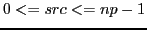

rank = psb_get_mpi_rank(icontxt, id)
This function returns the MPI rank of the PSBLAS process 
- Type:
- Asynchronous.
- On Entry
-
- icontxt
- the communication context identifying the virtual
parallel machine.
Scope: global.
Type: required.
Intent: in.
Specified as: an integer variable.
- id
- Identifier of a process in the PSBLAS virtual parallel machine.
Scope: local.
Type: required.
Intent: in.
Specified as: an integer value.

- On Return
-
- Funciton value
- The MPI rank associated with the PSBLAS process .
Scope: local.
Type: required.
Intent: out.
Notes
The subroutine version psb_get_rank is still available but is
deprecated.